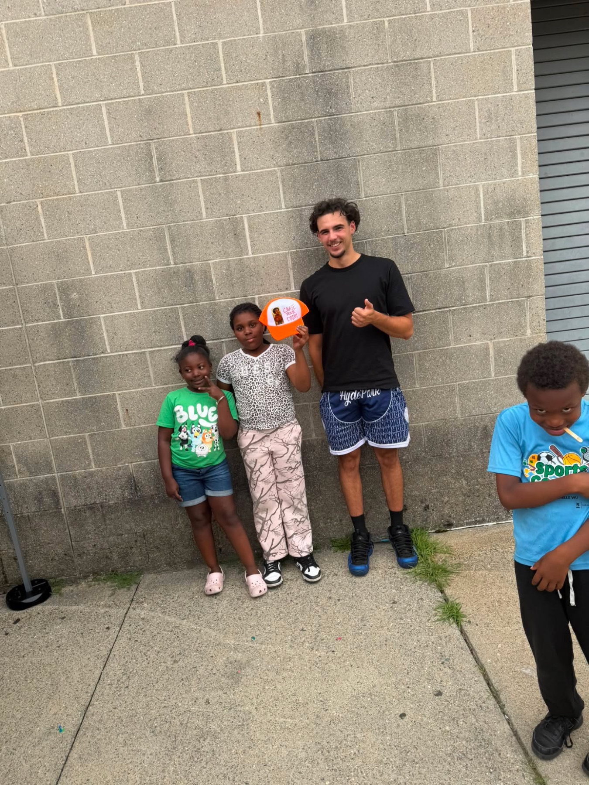
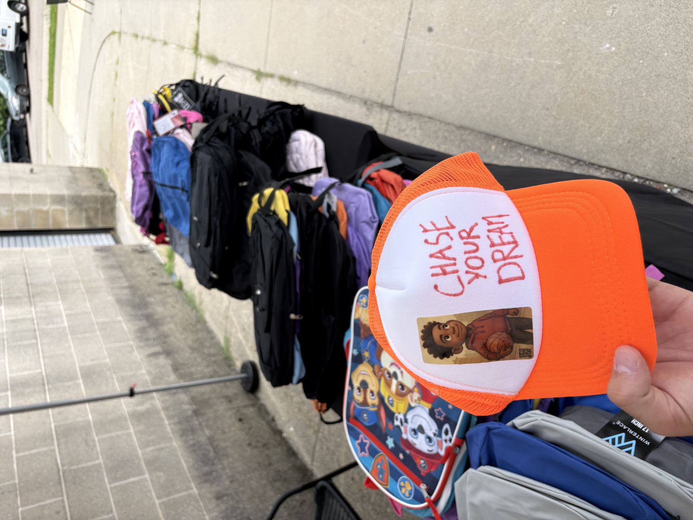
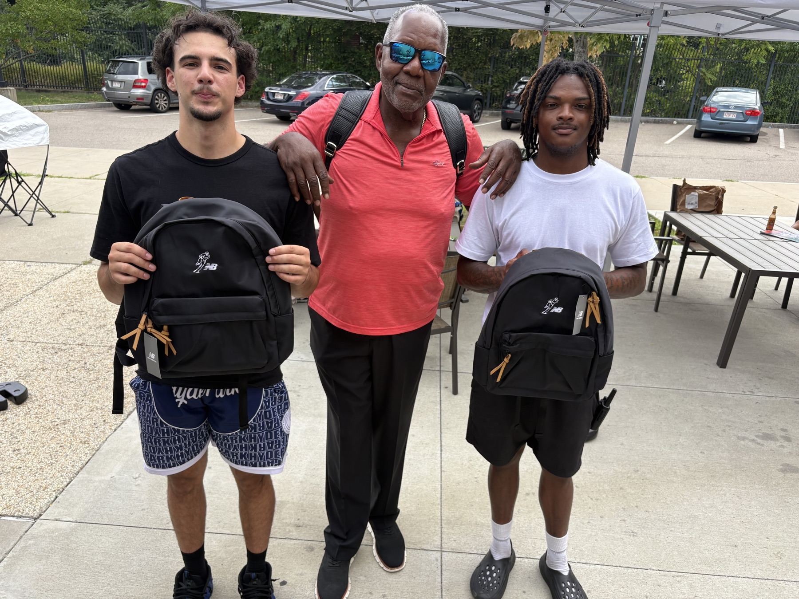
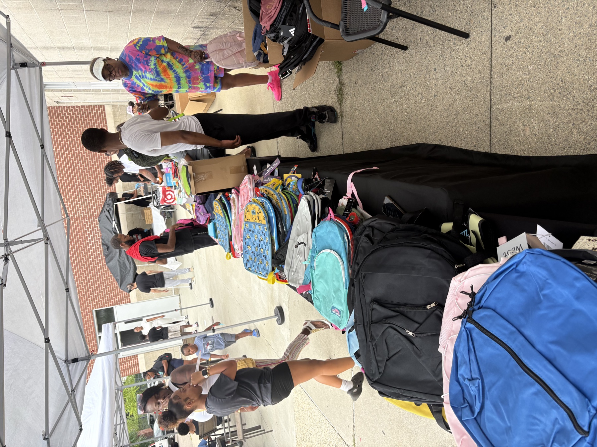
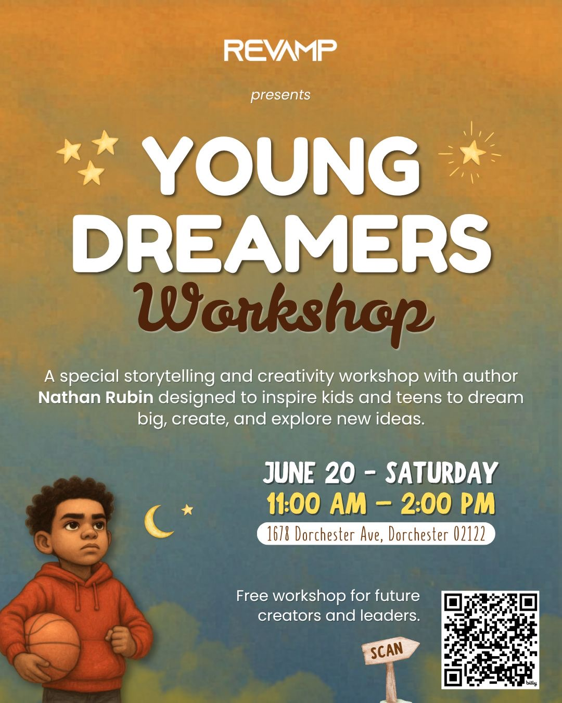
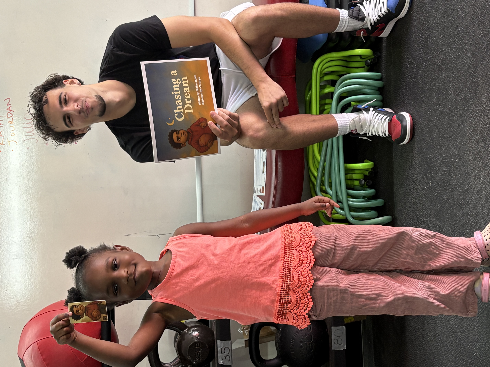
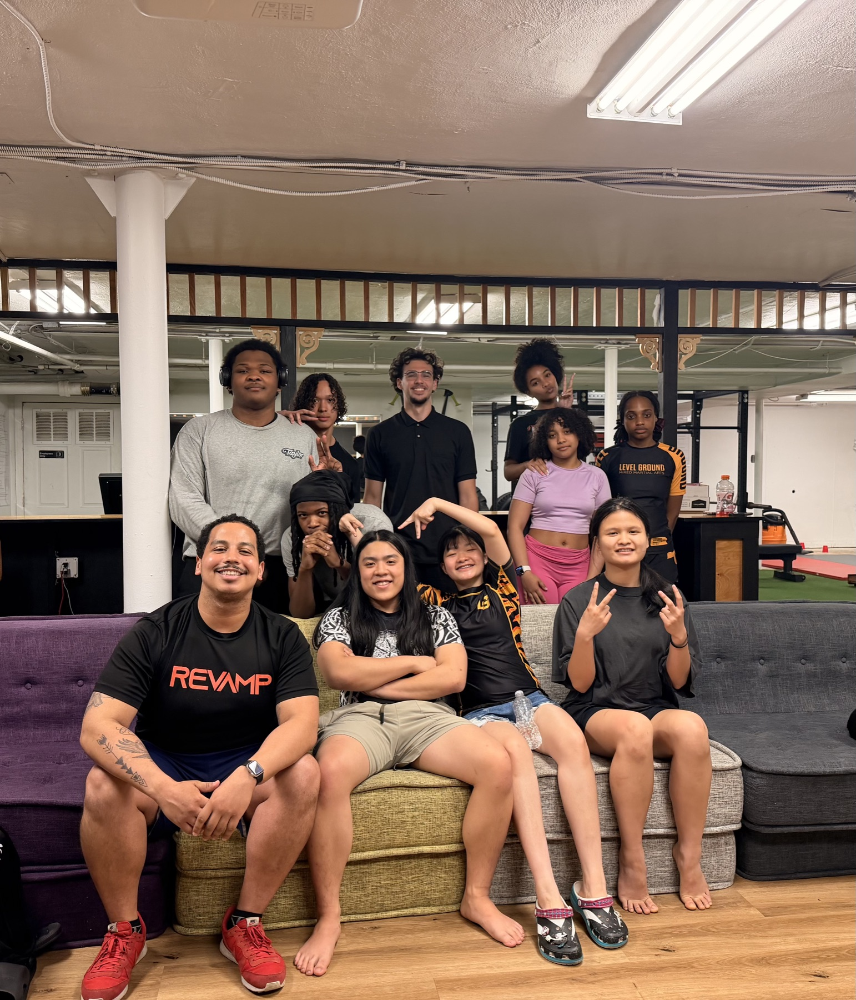

Community Engagement
Beyond writing, Nathan is committed to connecting with schools, organizations, and communities through events, youth engagement, speaking opportunities, and collaborative initiatives.
Upcoming Events
Upcoming school visits, book readings, and community workshops are currently being scheduled.
Invite Nathan to Your School or OrganizationCompleted Events
Late Summer 2026
2026 Annual Mildred Ave Community Center Book Bag Drive — Mattapan
Nathan participated in the 2026 Annual Mildred Ave Community Center Book Bag Drive in Mattapan, where hundreds of book bags and school supplies were distributed to children in the community. Alongside providing supplies, Nathan shared the message and values behind Chasing a Dream, encouraging young people to embrace confidence, ambition, self-belief, and the mindset that they can pursue their dreams.
Mildred Ave Community Center, Mattapan, Boston, MA





June 2026
Chasing Dreams: Young Dreamers Workshop
Hosted a free storytelling, creativity, and inspiration workshop for kids and teens at Revamp Training in Dorchester. Two age-based tracks — Younger Dreamers (4–11) and Future Dreamers (12–16) — welcomed young people for story sessions, hands-on activities, and meaningful conversations about goals, confidence, and big dreams.
Revamp Training, Dorchester, Boston, MA

May 2026
Teen Program Speaking Engagement
I recently had the privilege of speaking with the teen program at Level Ground Dorchester, sharing my journey as a college athlete and author. We talked about the importance of staying focused, overcoming challenges, and pursuing your goals with confidence and determination. A special thank you to Jeremy Colon of Revamp for the opportunity, and to Level Ground Dorchester for creating such an incredible space where young people in Boston can learn, grow, and thrive.
Level Ground Dorchester, Dorchester, MA


February 2026
Mattapan School Tour & Reading
Shared "Chasing a Dream" with the bright minds at Mildred Ave K-8 and Ellison Parks schools in Mattapan. This visit was all about belief and the power of possibility. Big thanks to Jadin Draper, UMass Boston MBK, Boston Reads, and the Office of Black Male Advancement—it truly takes a village!
Mattapan, Boston, MA


October 2025
School Reading & Workshop
Had an incredible time visiting Kilmer Elementary School for a high-energy reading and signing of "Chasing a Dream." It was a blessing to connect with these young minds!
Kilmer Elementary School, West Roxbury, Boston, MA


August 2025
Back-2-School Drive
I was proud to sponsor the Back-to-School Drive at the Mildred Community Center, helping kids start the year with the tools and confidence they need.
Mildred Community Center, Mattapan, MA


April 2025
Local Community Talk
Delivered a motivational presentation to teens on the significance of collegiate athletics.
SNUG Program, Yonkers YMCA, Yonkers, NY

In The News
Boston
Student Athlete Nathan Rubin Debuts Children's Book, "Chasing a Dream"
Read the feature article published by UMass Boston.
Read the Article